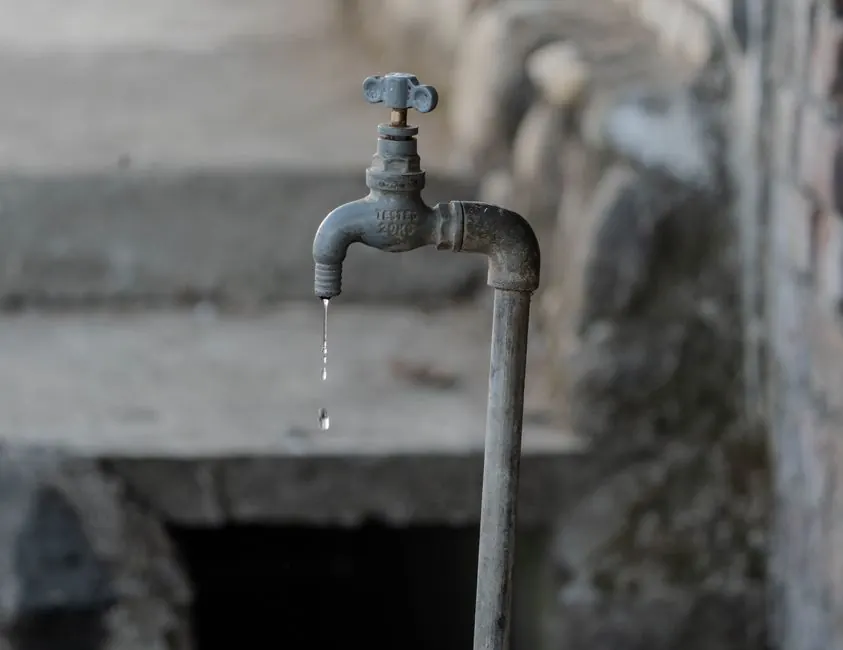
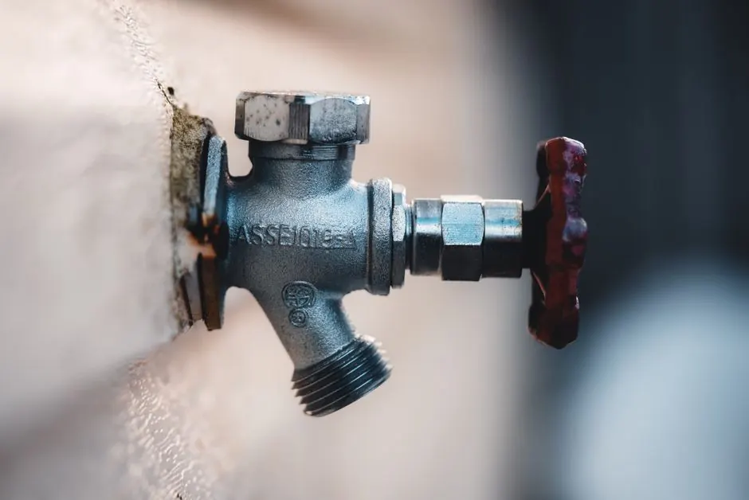
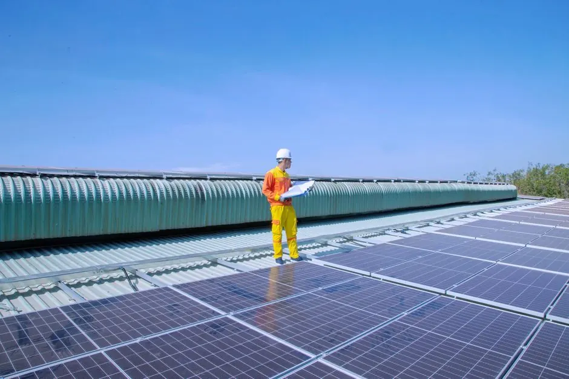

Protect your property with expert leak detection services
Commercial Leak Detection Boulder CO
Commercial leak detection Boulder CO is crucial for businesses to prevent costly water damage. Our business leak detection Boulder services ensure your property remains safe and dry.
Live dispatcherUpfront optionsBacked workmanship
What's included
What Our Commercial Leak Detection Boulder CO Includes
Our commercial leak detection services cover a comprehensive range of assessments and tools to ensure thorough leak identification and resolution.
Detailed Property Assessment
We conduct a thorough evaluation of your property to identify potential leak sources and assess existing plumbing.
Advanced Technology Use
Utilizing infrared cameras and moisture meters, we accurately locate leaks without invasive procedures.
Comprehensive Reporting
You receive a detailed report outlining our findings, recommended repairs, and preventative measures.
Follow-Up Support
Our team is available for follow-up consultations and repair services to ensure your property is leak-free.
Service overview
Understanding Commercial Leak Detection Boulder CO
Commercial leak detection Boulder CO is a specialized service that identifies and locates leaks in commercial properties using advanced technology. This process helps to prevent water damage and costly repairs.
Local Boulder businesses often face unique challenges such as aging plumbing systems and extreme weather conditions. Utilizing leak detection services for commercial properties Boulder CO can save businesses from significant financial losses due to undetected leaks.

How we workWe verify the cause, compare realistic options, and confirm the repair before we leave.
The service timeline
Our Commercial Leak Detection Process
The process flexes to the condition, but these checkpoints keep decisions clear.
Initial Consultation
We start with an assessment of your property, discussing any concerns you have. This typically takes about 30 minutes.
Site Inspection
Our team conducts a thorough inspection using specialized tools like moisture meters and infrared cameras. This step usually lasts 1-2 hours.
Leak Detection
Using advanced leak detection equipment, we pinpoint the exact location of any leaks. This is crucial for effective repairs.
Reporting Findings
After detection, we provide a detailed report outlining our findings and recommended actions. Expect this within 24 hours.
Follow-Up Services
If needed, we can assist with repair services or further evaluations. Our goal is to ensure your property is leak-free.
Tools & methods
Tools and Methods for Leak Detection
Purpose-built equipment, used by trained technicians, so the job is done accurately the first time.
Moisture Meter
Used to measure moisture levels in walls and floors, helping to identify hidden leaks.
Infrared Camera
Helps visualize temperature differences, indicating potential leaks behind walls and ceilings.
Acoustic Listening Devices
Detects the sound of leaks in pipes, allowing for precise location identification.
Thermal Imaging
Visualizes moisture and heat patterns, aiding in the detection of leaks in various building materials.
Use cases
When to Use Commercial Leak Detection
These examples show how the service framework adapts rather than forcing every call through one repair.

Before: Office Building Water Stains
An office building had visible water stains on the ceiling, indicating a possible leak that needed urgent attention. → Our team found and fixed the leak, preventing further water damage and protecting the office's investment.
Before: Increased Water Bills
A business noticed rising water bills but couldn't identify the source of the leak. → After conducting a thorough leak detection, we found a hidden pipe leak, significantly reducing their monthly water costs.
Problems we solve
Problems Solved by Commercial Leak Detection Boulder CO
Our services address critical issues that can arise due to undetected leaks, ensuring your property remains safe and functional.
Hidden leaks causing water damage
Our commercial leak detection Boulder CO services quickly identify and address hidden leaks, preventing costly repairs.
Increased utility bills
By detecting leaks early, we help businesses save on water costs and improve their efficiency.
Health risks from mold growth
Our leak detection services address moisture issues before they lead to mold, ensuring a safe environment.
Pricing process
Understanding Pricing for Commercial Leak Detection
$200 - $600 depending on scope
Building Size
Larger buildings may require more time and resources for inspection, affecting overall costs.
Type of Leak
Different types of leaks (e.g., slab leaks vs. pipe leaks) may require specialized approaches, impacting pricing.
Technology Used
Advanced tools like infrared cameras may incur additional costs but provide more accurate results.
Customer reviews
What Our Clients Say About Our Services
★★★★★
“Leak Detection Pros helped us identify a hidden leak that was causing damage. Their quick response saved us thousands in potential repairs!”
★★★★★
“The team was professional and thorough. They used advanced tools and explained everything clearly. Highly recommend their commercial leak detection services.”
★★★★★
“We had a persistent leak issue that other companies couldn't resolve. Leak Detection Pros found it quickly. Their service is top-notch!”
How much does commercial leak detection cost in Boulder?
Most commercial leak detection jobs in Boulder range from $200 to $600, depending on the complexity and size of the property.
What are the signs of leaks in commercial properties in Boulder?
Signs include water stains, mold growth, unexpected increases in water bills, and damp spots on walls or ceilings.
How to find a reliable commercial leak detection service in Boulder?
Look for certified professionals with positive reviews and experience in commercial properties. Ask for references and detailed service offerings.
What tools are used for leak detection in Boulder?
We utilize advanced tools such as infrared cameras, moisture meters, and acoustic listening devices to accurately locate leaks.
Related services
Related Services

Residential Leak Detection
Our residential leak detection services complement commercial offerings by addressing leaks in homes, ensuring comprehensive protection for Boulder residents.
Water Pipe Inspection
Water pipe inspections are vital for identifying potential issues before they escalate, making them a valuable service for both residential and commercial clients.
Slab Leak Detection
Slab leak detection focuses on identifying leaks beneath concrete slabs, a crucial service for Boulder businesses and homeowners alike.Ready when you are
Get Reliable Commercial Leak Detection Boulder CO Today
Don't wait for leaks to cause damage. Contact us for a thorough inspection and expert leak detection services. Call now for a free estimate!

Talk with the local team
Request Commercial Leak Detection
We're here to help with all your leak detection needs in Boulder. Reach out to us during business hours for a prompt response.